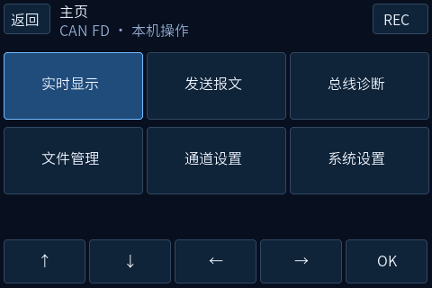
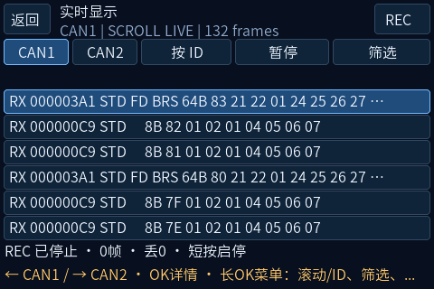
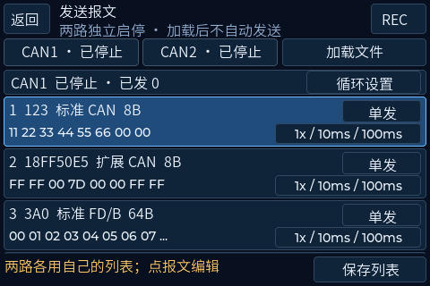
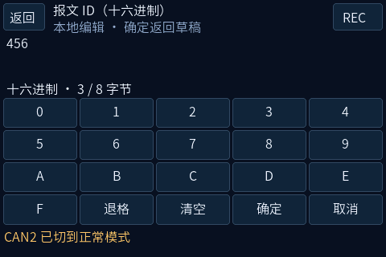
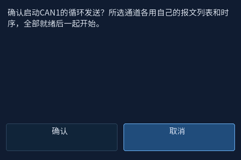
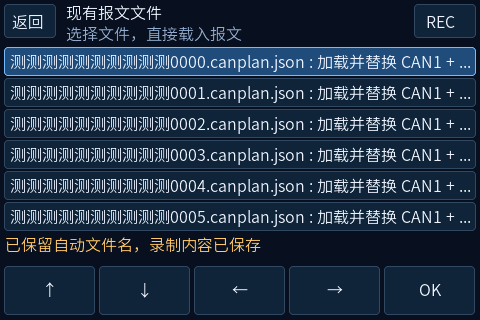

这份梳理来自固件状态机 fw/app/ui/core/ui_sm.c 和设备的真实 LVGL 渲染画面（480×320）。页面和条目是从运行中的模拟器里逐页读出来的，不是凭代码推测。末尾是新增“按键学习 / 模拟发送”的接入草案，等你确认后再细化。
主页 6 个入口，进入功能页后再进子页。“返回”逐级回退。发送、格式化、恢复出厂等有风险的操作，都先弹确认框。
同一套状态机同时接物理键和触摸。屏幕上固定有左上“返回”、右上 REC，部分页面底部还有 ↑↓←→ 和 OK 软键，所以绝大多数操作纯触摸也能完成。
主控上没有接任何按键，电源是拨动开关 SW101。所以长按返回回主页、POWER 熄屏和关机、BACK+REC 锁键、开机进升级这几项在新板上都用不了，要改。
左列是功能页，右边每行写“怎么操作 → 到哪里”。蓝色是现有子页；绿色虚线一行是新增功能的建议位置。
手势规则在 services/input/keys.c：OK、BACK 长按 1 秒；REC、POWER 长按 2 秒；方向键按住 0.5 秒后每 150 毫秒连发；同时按多个键时都不触发单键手势。右列是 Hardware-C 上的情况。
| 操作 | 现在的行为 | Hardware-C（纯触摸 + 拨动开关） |
|---|---|---|
| 点“返回”/ BACK 短按 | 回上一级；有对话框时等于取消 | 可用左上角“返回”按钮 |
| BACK 长按 1 秒 | 任何页面直接回主页 | 用不了屏幕上的“返回”只有点击，没有长按。深层页面只能一级一级点回去 |
| 点条目 / OK 短按 | 进入、执行、单发 | 可用直接点条目，或用底部 OK 软键 |
| OK 长按 1 秒 | 实时显示：打开操作菜单；发送页：编辑报文 | 基本可用发送页点报文行就会进编辑。实时显示页的菜单项由顶部按钮代替，只有“录制设置”要从系统设置进去 |
| ↑↓←→，按住连发 | 选择、改值、切通道 | 可用底部软键，按住也会连发 |
| REC 短按 | 开始或停止录制 | 可用右上角 REC 按钮 |
| POWER 短按 | 熄屏 | 用不了没有 POWER 键，只能等自动熄屏。熄屏后第一下触摸只用来唤醒 |
| POWER 长按 2 秒 | 关机：先停止录制、关闭文件，再断电 | 用不了SW101 直接切断电源。录制中断电，最后一段数据可能没写完 |
| 开机按住 POWER 1 秒 | 防止误开机 | 不适用拨上开关就开机 |
| 开机时按住 BACK+REC 3 秒 | 进入升级模式（Bootloader） | 用不了需要换一种进入方式 |
| BACK+REC 同时按 2 秒 | 锁定或解锁按键 | 用不了触摸做不了组合键 |
用仓库自带的 run_ui_host.py，在电脑上跑真实的 LVGL 代码画出来，和设备屏幕上的像素一致（480×320）。






从模拟器逐页读出的实际条目，顺序和设备上一致。
这些和新功能无关，只要换到 Hardware-C 就得处理。括号里是建议做法，你定。
顶栏加一个“主页”按钮，或者把“返回”改成长按回主页（触摸长按 1 秒）。
系统设置里的“自动关机”在拨动开关供电下没有意义，建议去掉。熄屏只保留自动熄屏，或者点顶栏状态区熄屏。
SW101 直接断电，录制文件的最后一段可能没写完。建议改成软关机：开关接到主控的输入脚，主控收尾后再断电。或者至少检测掉电，赶紧关闭文件。
纯触摸做不了组合键。按键锁可以去掉，或者做成系统设置里的开关。升级模式改成工程菜单里的“进入升级模式”加确认，或者用 USB 命令进入。
加上新功能后有 7 个入口，3×2 放不下。建议改成 4×2，多出的一格留给以后的功能。
APM 的按键输入是 2.2 kΩ 上拉到 VCC2_5V_SW（APM 被 CAN 唤醒后才有电），输入脚对地有 100 nF。原车开关的每个档位，其实就是对地接一个不同的电阻。所以“学习”就是测出每个档位的电压，换算成电阻；“发送”就是用电阻阵把这个电阻复现出来。
台架或实车，用 T 型线把设备并在开关信号线上
设备直接代替开关，需要知道 CAN 报文里的开关状态信号
用学过的或手动输入的键值去“按”APM